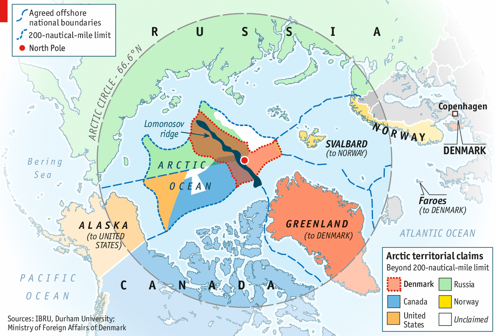
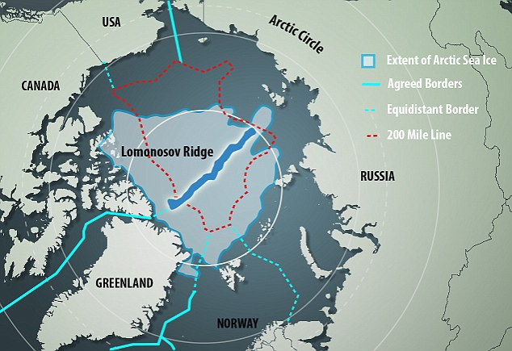

A pair of stealth submarines head out from the Canadian island of Yukon, heading east into the open Arctic ocean. They set a course for an unusual underwater ridge, named after the Russian polymath, Lomonosov. Their motive behind this move is fairly simple – to obtain samples of the continental shelf. They are trying to use these samples to prove to the United Nations Convention on the Law of the Sea (UNCLOS) that the Lomonosov Ridge is a natural prolongation of Canada’s land. Recognized possession of the continental shelf gives the owner rights to the ocean, to the fish swimming around it and to the vast reserve of minerals that may lie below or on the seabed. The submarines are carrying patriotic Canadian military men. Under the cover of darkness, they attempt to try and slip past a submarine of the Russian Coast Guard, there to prevent just such an incursion. It’s a precarious move. They will plant their flags on this seabed of Canadian territory. But, overpowered by the sheer preparedness of the Russians in the Arctic, they are intercepted and captured. The Canadians respond to the capture of their military men by dispatching ships from their nearest military base, Nunavut, only to be met with warnings from the far superior Russian presence in the Arctic, powered with six nuclear ice-breakers and several more military bases. Provoked by the move, Canada seeks the United States’ help. Denmark then realizes now is a perfect time to reclaim some lost territory in the region, with the situation rapidly escalating…

The five Arctic Ocean countries – Denmark, Russia, Canada, Norway and the United States
It’s only a scenario and even as I write this, there are forces pushing for greater share of the Arctic Ocean like never before. Various governments are working on ways to prevent this situation from ever playing out. Why now? What has caused this tectonic shift in governments’ positions on the Arctic Ocean? Why are they vying for underwater seabeds in a region as insignificant as the Arctic? The answer is simple – Global Warming, and the ever-enticing prospect of oil. Over the past fifty years, global warming has caused fifty percent of the Arctic ice cap to melt away. This breakup of Arctic ice has sent polar bears southward and onto land, signifying a drastic change in the Arctic and concurrently, in the political environment as well.
ONGOING POLITICAL SITUATION
Currently, Canada claims full jurisdiction of the Northwest Passage as part of its territorial waters, which allows them to charge a toll to other nations for traversing through them. The United States and the EU dispute Canada’s claim and are also against Russia’s charging for passage through the Northern Sea Route. There are also maritime border disputes between Russia and the United States. These disputes though, may all be settled peacefully. The conflict over an area in the Barents Sea between Russia and Norway encompassed everything from fishing rights to the oil and gas deposits, which were estimated to be thirty-nine million barrels. Russia, with extraordinary prescience, predicted that it will need Norwegian assistance in drilling in the Arctic and settled amicably. The real reason for conflict arises with the continental shelf, which is the seabed and subsoil areas that can be proved to be an extension of the natural landmass of a given country. This is the rationale behind the conflict between Canada and Russia over Russia’s claims of the Lomonosov Ridge, shown in the figure.

The Lomonosov Ridge - which countries are trying to prove is a natural extension of their continental shelf, in hope of access to untapped natural resources
UNDERWATER RICHES
There could be three factors in terms of resources to explain why countries stand to benefit tremendously from their claims in the Arctic.
Oil, the most significant factor and almost always reason for conflict
The U.S Geological Survey estimates that the Arctic Ocean contains 22 percent of the World’s remaining oil and gas deposits. The burning of fossil fuels caused the sudden climate change and led to melting of the Arctic ice cap, thereby making its vast deposits of oil and gas accessible for the first time in world history. It is said that the territory claimed by Russia alone holds up to 586 billion barrels. At $60 a barrel, that’s almost $35 trillion worth of oil. The world consumes around 90 million barrels of oil a day and so the estimated Russian deposits could essentially keep the entire planet running for almost eighteen years.
Freshwater fish
The fishing stocks represent another windfall with 25 percent of the world’s whitefish, from the cod in the Barents Sea to the pollack in the Russian Far East. The Atlantic has been so fished out of cod that great fishing towns are practically moribund.
Minerals
Geological surveys indicate that the Arctic seafloor contains abundant high-grade copper, zinc, diamonds, gold, silver and platinum.
NEW SHIPPING ROUTES
Estimates of the wealth the Arctic holds clearly vary widely, even wildly. Partly this is due to scarcity of information. Still, two things seem reasonably certain. One is that even the most conservative estimates of the gas and oil deposits make them attractive even in the worst of markets. The other is that the melting of the Arctic ice cap has opened the fabled, long-sought Northwest Passage across the top of Canada to commercial shipping, making it a “Trans-Arctic Panama Canal”. Russia’s equivalent, the Northern Sea Route (NSR) has already been compared to the Suez Canal, with which it intends to compete. There are two main advantages to these two new shipping routes :
Shorter is cheaper
The Northern Sea Route reduces a voyage from Hamburg to Yokohama from 18,350 kilometers to 11,100. Canada’s direct Northwest Passage too cuts 25 percent off the distance, with proportionate savings in fuel and labour costs, although the insurance costs could run higher due to the additional perceived risk.
Reduced Carbon Dioxide Emissions
The shorter routes also imply reduced carbon dioxide emissions. The pirate-infested strait of Malacca, on the route between Europe, the Suez Canal, the oil-exporting countries and the busy ports of East Asia can be avoided.
WILL THE ARCTIC’S POTENTIAL WEALTH BECOME MOOT?
Being the mysterious behemoth that the Arctic is, the popular perception of its wealth can in fact lead to a rather anticlimactic conclusion, for three primary reasons
-
Drilling in the Arctic could be unprofitable
The vast gas and oil reserves may prove to be more expensive than anticipated to extract. With the price of oil beginning to show signs of weakness again due to strong reports of US shale oil activity, the price of oil may stay low for a long time, rendering profitable extraction in the Arctic improbable. In the meantime, breakthroughs in renewable energy may make oil less necessary altogether
. -
Safety of the new trade routes
The sea lanes over Russia connecting Asia and Europe may also not prove to be as lucrative as anticipated. The menacing unpredictability of the weather may impose restrictions on how expansive the shipping season can actually be. A few accidents in the region could spark concern from investors and insurers alike, leading to skyrocketing premiums.
-
Environmental concerns
The Arctic was an ecological crime scene between 1955 and 1990, with 138 nuclear tests conducted. 14 nuclear reactors were simply dumped into the Arctic waters. Studies show that when the ocean floor is drilled, there is a danger of disintegrating a vast portion of the Soviet Union’s irresponsible nuclear legacy, threatening to contaminate close to a quarter of the world’s Arctic coastlines.
THE GEOPOLITICAL STANDPOINT
The shortest distance between the United States and USSR for strategic bombers was over the North Pole. If the possibility of war arises, whoever controls the Arctic will have a vital advantage. Russia has been indulging of late, with the annexation of Crimea and carrying out extensive military exercises in the Arctic. It has re-equipped old Soviet bases and tested the first of its new-generation rockets, called the Angara. Sweden spent the better part of Summer 2014 searching for a Russian submarine suspected of slipping into its territorial waters.
With the uncertain promise of fabled wealth, it is impossible to predict what the future holds in relation to the Arctic, but one thing is certain,
“The Arctic is just an ocean, governed by the law of the sea”
as said by the Norwegian Foreign Minister, implying that the treasures of the Arctic Ocean and any related disputes are the exclusive business of the five nations with an Arctic coastline. The decisions taken by the five countries would have implications for countries spread over the entire globe.
CONCLUSION
It is a perverse paradox that climate change may result in the discovery of copious amounts of oil and gas reserves, the ramifications of which could be far-reaching, both environmentally and geopolitically. For instance, if Russia contrives a favourable deal, the shifting of the power axis toward the East would be accelerated, leading to a rethink of power distribution in global organizations. Although it is impossible to have the prescience to foresee the events that may unravel in their entirety, it is safe to say that if countries can navigate through the territorial concerns and stake their respective claims without particularly infringing upon others’, the Arctic in all its might, could be very, very propitious for the World economy.